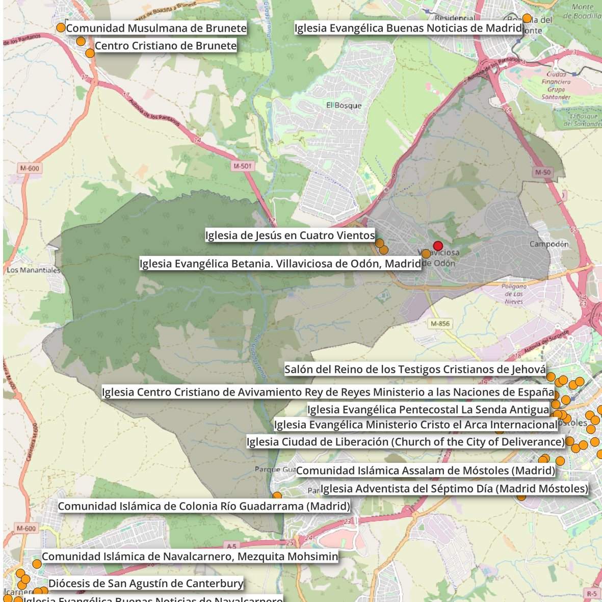
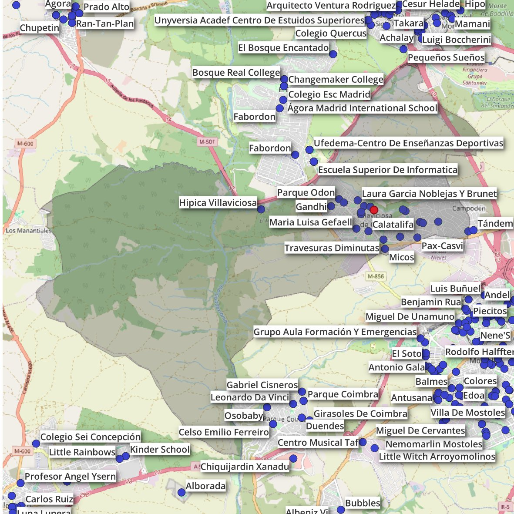

Puntos de interés en el territorio parroquial
Parroquia Santiago Apóstol (Villaviciosa de Odón) · Arciprestazgo de Villaviciosa de Odón
Entidades religiosas no católicas

4 entidades religiosas no católicas en el territorio de la parroquia.
Evangélicos (3)
- Iglesia de Jesús en Cuatro VientosCalle Gregorio Marañón 18, Villaviciosa de Odón
- Iglesia Evangélica Betania. Villaviciosa de Odón, MadridCalle Eras 12, Villaviciosa de Odón
- Iglesia Evangélica Buenas Noticias de Villaviciosa de OdónCalle Fuentecilla 23, Villaviciosa de Odón
Baha'is (1)
- Baha'i de Villaviciosa de OdónCalle Doctor Fleming 27, Villaviciosa de Odón
Fuente: Registro de Entidades Religiosas del Ministerio de la Presidencia, Justicia y Relaciones con las Cortes. Situación en el mapa: dirección geocodificada con CartoCiudad (IGN) o Nominatim (OpenStreetMap).
Centros educativos

14 centros educativos en el territorio de la parroquia (público: 9, privado: 4, privado concertado: 1).
| Centro | Tipo | Titularidad | Domicilio | Web |
|---|---|---|---|---|
| CALATALIFA | Instituto de educación secundaria | Público | Calle San Antonio, 2, 28670 Villaviciosa de Odón | Página web |
| CENT.FORM.AMB.PROF.TALLER NAT. V.DE ODON | Centro de formación ambiental | Público | Avenida Viveros, s/n, 28670 Villaviciosa de Odón | Página web |
| CENTRO DE CAPACITACION AGRARIA | Instituto de educación secundaria | Público | Avenida Viveros, 1, 28670 Villaviciosa de Odón | Página web |
| CENTRO DE FORMACION DE LA REAL FEDERACION ESPAÑOLA DE JUDO Y DEPORTES ASOCIADOS | Centro autorizado de enseñanzas deportivas grado medio y superior | Privado | Calle León, 59, 28670 Villaviciosa de Odón | |
| COLEGIO ALCALA | Centro privado de educación infantil, primaria y secundaria | Privado concertado | Calle Alférez Luis Martín Vidales, 1, 28670 Villaviciosa de Odón | Página web |
| GANDHI | Colegio de educación infantil, primaria y secundaria | Público | Calle Jacinto Benavente, s/n, 28670 Villaviciosa de Odón | Página web |
| HERMANOS GARCIA NOBLEJAS | Colegio de educación infantil y primaria | Público | Calle Madroño, 3, 28670 Villaviciosa de Odón | Página web |
| HIPICA VILLAVICIOSA | Centro autorizado de enseñanzas deportivas grado medio | Privado | Calle Pedraza, s/n, 28670 Villaviciosa de Odón | |
| JUAN FARIAS | Escuela infantil | Público | Calle Toledo, 18, 28670 Villaviciosa de Odón | Página web |
| LAURA GARCIA NOBLEJAS Y BRUNET | Colegio de educación infantil, primaria y secundaria | Público | Calle del Gral Sanz Marqués San Juan Puerto Rico, 11, 28670 Villaviciosa de Odón | Página web |
| MARIA LUISA GEFAELL | Escuela infantil | Público | Calle Cerro de los Ángeles, 1, 28670 Villaviciosa de Odón | Página web |
| PARQUE ODON | Escuela infantil privada | Privado | Avenida Príncipe de Asturias, s/n, 28670 Villaviciosa de Odón | Página web |
| PAX-CASVI | Centro privado de educación infantil, primaria y secundaria | Privado | Avenida Castilla, 27, 28670 Villaviciosa de Odón | |
| VILLAVICIOSA DE ODON | Escuela municipal de música | Público | Calle Arroyo, 12, 28670 Villaviciosa de Odón | Página web |
Fuente: registro de centros educativos de la Comunidad de Madrid. Solo se recogen los centros de alta.